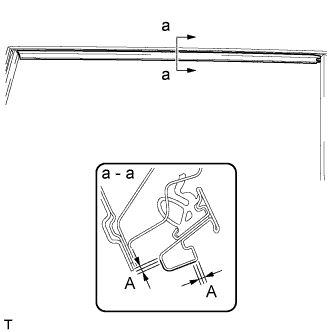
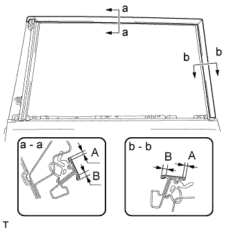
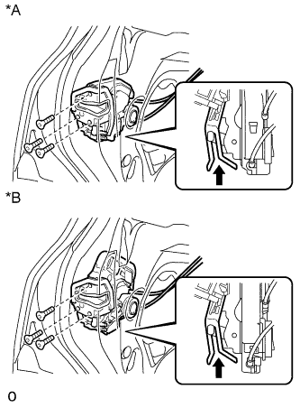
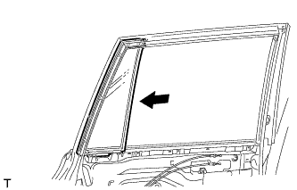
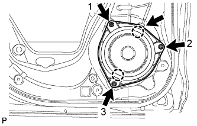
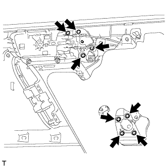
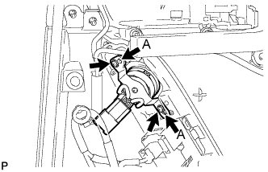
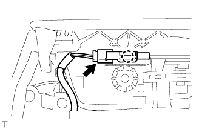

ЗАДНЯЯ ДВЕРЬ > ПОВТОРНАЯ СБОРКА |
| 1. УСТАНОВИТЕ НАРУЖНУЮ ДЕКОРАТИВНУЮ ПОЛОСУ ЛЕВОЙ ЗАДНЕЙ ДВЕРИ |
|  |
Положение нового наружного уплотнителя задней двери показано на рисунке.
| Область | Заданные условия |
| А | +/-1,0 мм (0,039 дюйма) от конца |
| 2. УСТАНОВИТЕ ЛЕВУЮ СВЕТОМАСКИРОВОЧНУЮ ЛЕНТУ |
 |
Положение новой светомаскировочной ленты показано на рисунке.
| Область | Заданные условия |
| А | +/-1,0 мм (0,039 дюйма) от конца |
| 3. УСТАНОВИТЕ НИЖНИЙ НАРУЖНЫЙ УПЛОТНИТЕЛЬ ЛЕВОЙ ЗАДНЕЙ ДВЕРИ |
 |
Положение нового нижнего наружного уплотнителя задней двери показано на рисунке.
| Область | Заданные условия |
| А | +/-1,0 мм (0,039 дюйма) от конца |
| 4. УСТАНОВИТЕ ЛЕВУЮ СВЕТОМАСКИРОВОЧНУЮ ЛЕНТУ № 2 |
|  |
Обратитесь к рисунку, чтобы получить представление о расположении светомаскировочной ленты № 2.
| Область | Заданные условия |
| А | 2–4 мм (0,078–0,158 дюйма) |
| B | 4 - 6 мм (0,157 - 0,236 дюйма) |
| 5. УСТАНОВИТЕ ПЕРЕДНИЙ МОЛДИНГ РАМЫ ОКНА ЛЕВОЙ ЗАДНЕЙ ДВЕРИ |
Очистите поверхность кузова автомобиля.
С помощью нагревательной лампы разогрейте поверхность кузова.
Снимите двухстороннюю клейкую ленту с поверхности кузова автомобиля.
Удалите остатки клейкой ленты чистящим средством.
Установите новый передний молдинг оконной рамы задней двери.
С помощью нагревательной лампы прогрейте новый передний молдинг рамы окна задней двери и поверхность кузова автомобиля.
Снимите с поверхности переднего молдинга рамы окна задней двери отслаивающуюся бумагу.
Закрепите фиксатор и двухстороннюю клейкую ленту, чтобы установить передний молдинг рамы окна задней двери.
Установите новый фиксатор молдинга рамы окна двери.
| 6. УСТАНОВИТЕ МОЛДИНГ РЕМНЯ ЛЕВОЙ ЗАДНЕЙ ДВЕРИ |
Установите молдинг ремня задней двери, закрепив его 7 захватами.
| 7. УСТАНОВИТЕ ПОДУШКУ ПАНЕЛИ ЗАДНЕЙ ДВЕРИ |
Установите новую подушку панели передней двери и закрепите ее фиксатором.
| 8. УСТАНОВИТЕ УПЛОТНИТЕЛЬ ЛЕВОЙ ЗАДНЕЙ ДВЕРИ № 2 |
Введите в зацепление 6 фиксаторов и направляющую, чтобы установить уплотнитель задней двери № 2.
| 9. УСТАНОВИТЕ УПЛОТНИТЕЛЬ ЛЕВОЙ ЗАДНЕЙ ДВЕРИ |
Введите в зацепление 19 фиксаторов и направляющую, чтобы установить уплотнитель задней двери.
| 10. УСТАНОВИТЕ ОГРАНИЧИТЕЛЬ ОТКРЫВАНИЯ ЛЕВОЙ ЗАДНЕЙ ДВЕРИ В СБОРЕ |
Нанесите на трущиеся поверхности ограничителя открывания задней двери универсальную консистентную смазку.
 |
Установите дверную пружину на дверную панель и закрепите ее 2 гайками.
Нанесите герметик на резьбу болта.
Установите дверную пружину на кузов и закрепите с помощью болта.
| 11. УСТАНОВИТЕ РАМУ НАРУЖНОЙ РУЧКИ ЛЕВОЙ ЗАДНЕЙ ДВЕРИ В СБОРЕ |
Нанесите на рабочие поверхности трения рамы наружной ручки задней двери в сборе универсальную консистентную смазку.
Введите в зацепление захват и заверните гайку ручки двери.
Установите раму наружной ручки задней двери в сборе и закрепите ее винтом с помощью торцевого ключа "TORX" (T30).
| 12. УСТАНОВИТЕ НАКЛАДКУ НАРУЖНОЙ РУЧКИ ЛЕВОЙ ЗАДНЕЙ ДВЕРИ № 2 |
Введите в зацепление 2 захвата и установите накладку наружной ручки задней двери № 2.
| 13. УСТАНОВИТЕ НАКЛАДКУ НАРУЖНОЙ РУЧКИ ЛЕВОЙ ЗАДНЕЙ ДВЕРИ № 1 |
Введите в зацепление 3 захвата и установите накладку наружной ручки задней двери № 1.
| 14. УСТАНОВИТЕ НАРУЖНУЮ РУЧКУ ЛЕВОЙ ЗАДНЕЙ ДВЕРИ В СБОРЕ |
 |
Вставьте переднюю часть наружной ручки задней двери в сборе в раму наружной ручки задней двери.
Вставьте заднюю часть наружной ручки задней двери в сборе в раму наружной ручки задней двери. Затем сдвиньте наружную ручку задней двери в сборе вперед, чтобы установить ее на место.
 |
Переместите рычаг в направлении, указанном на рисунке стрелкой, чтобы зафиксировать наружную ручку двери в сборе.
| 15. УСТАНОВИТЕ КРЫШКУ НАРУЖНОЙ РУЧКИ ЗАДНЕЙ ДВЕРИ |
Введите в зацепление захват, чтобы установить крышку наружной ручки задней двери.
Установите крышку наружной ручки задней двери и закрепите ее винтом с помощью торцевого ключа "TORX" (T30).
| 16. УСТАНОВИТЕ ВНУТРЕННИЙ ТРОС ЗАМКА ЛЕВОЙ ЗАДНЕЙ ДВЕРИ В СБОРЕ |
Установите внутренний трос замка задней двери в сборе.
Введите в зацепление 3 захвата.
| 17. УСТАНОВИТЕ ТРОС ДИСТАНЦИОННОГО УПРАВЛЕНИЯ ЗАМКОМ ЛЕВОЙ ЗАДНЕЙ ДВЕРИ В СБОРЕ |
Установите трос дистанционного управления замком задней двери в сборе.
Введите в зацепление захват.
| 18. УСТАНОВИТЕ ЗАМОК ЛЕВОЙ ЗАДНЕЙ ДВЕРИ В СБОРЕ |
|  |
Нанесите на рабочие поверхности трения замка задней двери универсальную консистентную смазку.
| *A | Для моделей без системы двойной блокировки |
| *B | Для моделей с системой двойной блокировки |
 | Сдвиньте |
Установите новое уплотнение жгута проводов замка двери на замок задней двери в сборе.
Вставьте замок задней двери в сборе в пластину отпускания наружной ручки задней двери и установите его на панель задней двери.
Убедитесь, что пластина отпускания наружной ручки задней двери надежно закреплена на замке задней двери в сборе.
Установите замок задней двери и закрепите его 3 винтами с помощью торцевого ключа "TORX" T30.
| 19. УСТАНОВИТЕ ЭЛЕКТРОДВИГАТЕЛЬ СТЕКЛОПОДЪЕМНИКА ЛЕВОЙ ЗАДНЕЙ ДВЕРИ В СБОРЕ |
Нанесите универсальную консистентную смазку на все трущиеся и вращающиеся детали электродвигателя стеклоподъемника.
Закрепите электродвигатель стеклоподъемника 3 винтами с помощью торцевого ключа "TORX" T25.
| 20. УСТАНОВИТЕ СТЕКЛОПОДЪЕМНИК ЛЕВОЙ ЗАДНЕЙ ДВЕРИ |
Нанесите на рабочие поверхности трения стеклоподъемника задней двери в сборе универсальную консистентную смазку.
Вверните болт временного крепления в стеклоподъемник задней двери в сборе.
 |
Временно установите стеклоподъемник задней двери и закрепите его болтом временного крепления.
| *1 | Болт временного крепления |
Временно вверните 3 болта и затем затяните 3 болта и болт временного крепления.
| 21. УСТАНОВИТЕ НАПОЛНИТЕЛЬ ЖЕЛОБКА СТЕКЛА ЗАДНЕЙ ДВЕРИ |
Нанесите мыльный раствор на новый наполнитель желобка стекла задней двери.
| Область | Заданные условия |
| А | 21 мм (0,827 дюйма) |
| B | 22,5 мм (0,886 дюйма) |
| *a | Передняя сторона |
| *b | Задняя сторона |
Установите наполнитель желобка стекла задней двери в положение, показанное на рисунке.
| 22. УСТАНОВИТЕ ЖЕЛОБОК СТЕКЛА ЛЕВОЙ ЗАДНЕЙ ДВЕРИ |
Нанесите мыльный раствор на новый желобок стекла задней двери.
| Область | Заданные условия |
| А | 21 мм (0,827 дюйма) |
| B | 22,5 мм (0,886 дюйма) |
| *a | Передняя сторона |
| *b | Задняя сторона |
Установите желобок стекла задней двери в положение, показанное на рисунке.
| 23. УСТАНОВИТЕ СТЕКЛО ЗАДНЕЙ ЛЕВОЙ ДВЕРИ В СБОРЕ |
Подсоедините провод к отрицательному (-) выводу аккумуляторной батареи и разъему электродвигателя стеклоподъемника задней двери.
 |
Подсоедините переключатель электрического стеклоподъемника в сборе и сместите рычаг стеклоподъемника таким образом, чтобы ролик на рычаге был виден через технологическое отверстие.
Отсоедините переключатель электрического стеклоподъемника в сборе и разъем электродвигателя стеклоподъемника задней двери.
Отсоедините провод от отрицательного (-) вывода аккумуляторной батареи.
 |
Вставьте стекло задней двери в панель задней двери вдоль направляющей стекла задней двери в направлении, указанном на рисунке стрелками.
| 24. УСТАНОВИТЕ УПЛОТНИТЕЛЬ НЕОПУСКНОГО СТЕКЛА ЛЕВОЙ ЗАДНЕЙ ДВЕРИ |
 |
Установите уплотнитель неопускного стекла задней двери на неопускное стекло задней двери.
| 25. УСТАНОВИТЕ НЕОПУСКНОЕ СТЕКЛО ЛЕВОЙ ЗАДНЕЙ ДВЕРИ |
|  |
Установите неопускное стекло задней двери вместе с уплотнителем неопускного стекла задней двери в направлении, указанном на рисунке стрелкой.
| 26. УСТАНОВИТЕ ОБЛИЦОВКУ РАМЫ ЛЕВОЙ ЗАДНЕЙ ДВЕРИ |
Установите новую облицовку рамы двери и закрепите ее фиксатором.
| 27. УСТАНОВИТЕ ПОПЕРЕЧИНУ ОКНА ЛЕВОЙ ЗАДНЕЙ ДВЕРИ В СБОРЕ |
Установите поперечину окна задней двери в сборе сверху вниз.
Установите на направляющую стекла поперечину окна задней двери.
Вверните болт временного крепления в поперечину окна задней двери.
Установите поперечину окна задней двери в сборе.
Вверните 2 болта и винт.
Затяните болт временного крепления, чтобы установить поперечину окна задней двери в сборе.
| 28. УСТАНОВИТЕ НАПРАВЛЯЮЩУЮ СТЕКЛА ЛЕВОЙ ЗАДНЕЙ ДВЕРИ |
Установите направляющую стекла.
| 29. УСТАНОВИТЕ КРЫШКУ ТЕХНОЛОГИЧЕСКОГО ОТВЕРСТИЯ ЗАДНЕЙ ДВЕРИ |
Наклейте новую бутиловую ленту на панель задней двери.
 |
Пропустите трос дистанционного управления замком задней двери и внутренний трос замка задней двери через новую крышку технологического отверстия задней двери.
Закрепите крышку технологического отверстия задней двери, используя контрольные точки на панели задней двери.
| *1 | Контрольная точка |
Подсоедините разъем.
Установите жгут проводов задней двери и закрепите его 2 хомутами.
| 30. УСТАНОВИТЕ ЗАДНИЙ ДИНАМИК |
|  |
Временно установите динамик, введя в зацепление 2 захвата динамика с панелью двери.
Установите задний динамик и закрепите его 3 винтами в порядке, показанном на рисунке.
Подсоедините разъем.
| 31. УСТАНОВИТЕ ВНУТРЕННЮЮ РУЧКУ ЛЕВОЙ ЗАДНЕЙ ДВЕРИ В СБОРЕ |
 |
Введите в зацепление направляющую и 2 захвата, чтобы установить внутреннюю ручку задней двери на панель облицовки задней двери.
Заверните 2 винта.
|  |
Вверните 8 винтов в подлокотник задней двери.
| 32. УСТАНОВИТЕ ЗАДНИЙ ДИНАМИК № 2 В СБОРЕ (для моделей с 14 динамиками) |
|  |
Совместите динамик с установочными штырями двери А.
Установите задний динамик № 2 и закрепите его 2 винтами.
| 33. УСТАНОВИТЕ ЛАМПУ ОСВЕЩЕНИЯ САЛОНА № 2 В СБОРЕ |
Поверните лампу в направлении, указанном стрелкой, чтобы установить ее.
Закрепите зажим.
Подсоедините разъем.
| 34. УСТАНОВИТЕ ЛАМПА ПОДСВЕТКИ ВНУТРЕННЕЙ РУЧКИ ЛЕВОЙ ЗАДНЕЙ ДВЕРИ |
|  |
Подсоедините разъем.
Зацепите захват, чтобы закрепить лампу.
| 35. УСТАНОВИТЕ ЛАМПУ ОСВЕЩЕНИЯ ПРОЕМА ЛЕВОЙ ЗАДНЕЙ ДВЕРИ В СБОРЕ |
Подсоедините разъем.
Введите в зацепление 2 захвата и установите лампу.
| 36. УСТАНОВИТЕ ПЕРЕКЛЮЧАТЕЛЬ ЭЛЕКТРИЧЕСКОГО СТЕКЛОПОДЪЕМНИКА ЗАДНЕЙ ДВЕРИ В СБОРЕ |
Установите переключатель электрического стеклоподъемника задней двери, закрепив его 2 захватами.
| 37. УСТАНОВИТЕ ВНУТРЕННИЙ УПЛОТНИТЕЛЬ СТЕКЛА ЛЕВОЙ ЗАДНЕЙ ДВЕРИ |
 |
Введите в зацепление 3 захвата, чтобы установить внутренний уплотнитель стекла задней двери, как показано на рисунке.
| 38. УСТАНОВИТЕ ПАНЕЛЬ ОБЛИЦОВКИ ЛЕВОЙ ЗАДНЕЙ ДВЕРИ |
 |
Установите зажим на дверную панель.
Подсоедините трос дистанционного управления замком задней двери в сборе и внутренний трос замка задней двери в сборе.
Подсоедините все разъемы.
 |
Закрепите панель облицовки задней двери с помощью 4 захватов на внутреннем уплотнителе стекла задней двери, как показано на рисунке.
Введите в зацепление 9 фиксаторов и установите панель облицовки задней двери в сборе.
Вверните 3 винта.
| 39. УСТАНОВИТЕ ЛЕВУЮ НАКЛАДКУ ВЕРХНЕГО ПОРУЧНЯ |
 |
Введите в зацепление 8 захватов и установите облицовку верхнего поручня.
| 40. УСТАНОВИТЕ ДЕРЖАТЕЛЬ ВНУТРЕННЕЙ РУЧКИ ЛЕВОЙ ДВЕРИ № 2 |
 |
Введите в зацепление 3 захвата, чтобы установить оправу внутренней ручки задней двери.
| 41. ПОДСОЕДИНИТЕ ПРОВОД К ОТРИЦАТЕЛЬНОМУ ВЫВОДУ АККУМУЛЯТОРНОЙ БАТАРЕИ |
| 42. ИНИЦИАЛИЗИРУЙТЕ СИСТЕМУ УПРАВЛЕНИЯ ЭЛЕКТРИЧЕСКИМИ СТЕКЛОПОДЪЕМНИКАМИ |
Выполните инициализацию системы управления электрическими стеклоподъемниками (Нажмите здесь).